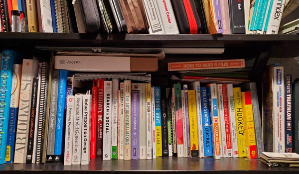

I love the fact that I get to lead teams of people through the philosophy of human-centered design, design thinking, and product development. I also deliver experience design and strategy that meet the desires of our customers, the feasibility of our development teams, and the viability of the business. I currently work and play from Madison (Wisconsin), though I am used to working onsite or virtually with a wide variety of teams across diverse geographies.
I'm an avid reader. I love to learn more about my profession, design, human behavior, self-improving myself, and helping others. One of my favorite books is Orbiting the Gaint Hairball by Gordon MacKenzie.
Apart from work, I love the outdoors. Just this year alone, I will have:
I enjoy sharing my outdoor experiences with my family and friends. We’ve had many adventures over the years that have helped me be a better person. Here is a glimpse into some of my outdoor adventures.
Another fun fact about me; I enlisted at the age of 17 into the United States Army and served one tour of duty (OIF) in 2003. While in a war zone, my contributions and performance earned me a retroactive promotion (battlefield promotions weren’t reinstated until 2009) to a non-commissioned officer. And yes, I used camo paint to draw flames on my truck in the middle of Iraq.